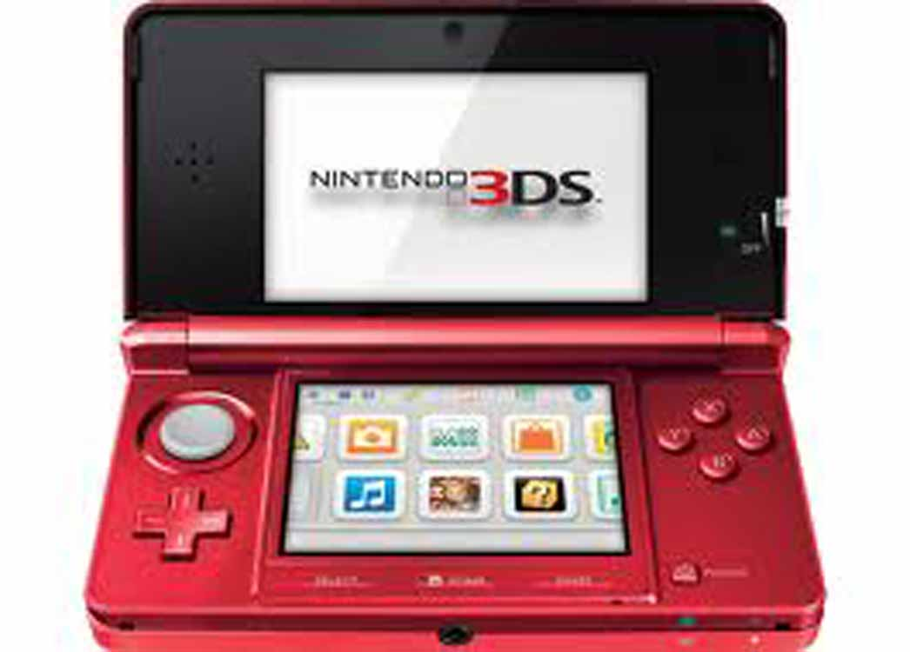

The Wii U is the first Nintendo console to support high-definition graphics. The Wii U's primary controller is the Wii U GamePad, which features an embedded touchscreen. The Wii introduced the Wii Remote controller, which can be used as a handheld pointing device and which detects movement in three dimensions.

The Nintendo 3DS is a portable game console. It is capable of projecting stereoscopic 3D effects without the use of 3D glasses or additional accessories.The Nintendo 3DS which maintains otherwise identical hardware, similar functionality, and compatibility with software designed for the Nintendo DS and 3DS. However, its use of a single touchscreen and lacks the Nintendo 3DS's signature autostereoscopic 3D display.